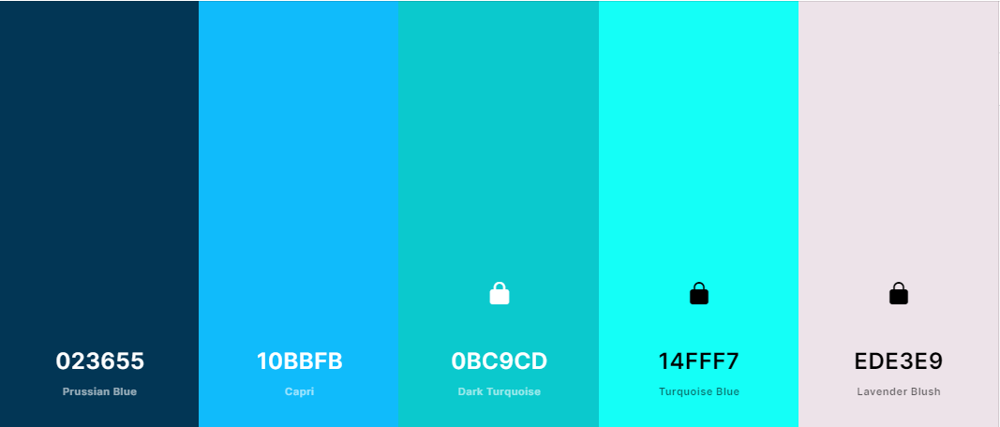

HEX
--prussian-blue: #023655ff;
--capri: #10bbfbff;
--dark-turquoise: #0bc9cdff;
--turquoise-blue: #14fff7ff;
--lavender-blush: #ede3e9ff;
CSS HSL
--prussian-blue: hsla(202, 95%, 17%, 1);
--capri: hsla(196, 97%, 52%, 1);
--dark-turquoise: hsla(181, 90%, 42%, 1);
--turquoise-blue: hsla(178, 100%, 54%, 1);
--lavender-blush: hsla(324, 22%, 91%, 1);
SCSS HEX
$prussian-blue: #023655ff;
$capri: #10bbfbff;
$dark-turquoise: #0bc9cdff;
$turquoise-blue: #14fff7ff;
$lavender-blush: #ede3e9ff;
SCSS HSL
$prussian-blue: hsla(202, 95%, 17%, 1);
$capri: hsla(196, 97%, 52%, 1);
$dark-turquoise: hsla(181, 90%, 42%, 1);
$turquoise-blue: hsla(178, 100%, 54%, 1);
$lavender-blush: hsla(324, 22%, 91%, 1);
SCSS RGB
>$prussian-blue: rgba(2, 54, 85, 1);
$capri: rgba(16, 187, 251, 1);
$dark-turquoise: rgba(11, 201, 205, 1);
$turquoise-blue: rgba(20, 255, 247, 1);
$lavender-blush: rgba(237, 227, 233, 1);
SCSS Gradient
$gradient-top: linear-gradient(0deg, #023655ff, #10bbfbff, #0bc9cdff, #14fff7ff, #ede3e9ff);
$gradient-right: linear-gradient(90deg, #023655ff, #10bbfbff, #0bc9cdff, #14fff7ff, #ede3e9ff);
$gradient-bottom: linear-gradient(180deg, #023655ff, #10bbfbff, #0bc9cdff, #14fff7ff, #ede3e9ff);
$gradient-left: linear-gradient(270deg, #023655ff, #10bbfbff, #0bc9cdff, #14fff7ff, #ede3e9ff);
$gradient-top-right: linear-gradient(45deg, #023655ff, #10bbfbff, #0bc9cdff, #14fff7ff, #ede3e9ff);
$gradient-bottom-right: linear-gradient(135deg, #023655ff, #10bbfbff, #0bc9cdff, #14fff7ff, #ede3e9ff);
$gradient-top-left: linear-gradient(225deg, #023655ff, #10bbfbff, #0bc9cdff, #14fff7ff, #ede3e9ff);
$gradient-bottom-left: linear-gradient(315deg, #023655ff, #10bbfbff, #0bc9cdff, #14fff7ff, #ede3e9ff);
$gradient-radial: radial-gradient(#023655ff, #10bbfbff, #0bc9cdff, #14fff7ff, #ede3e9ff);
Site Color Scheme
